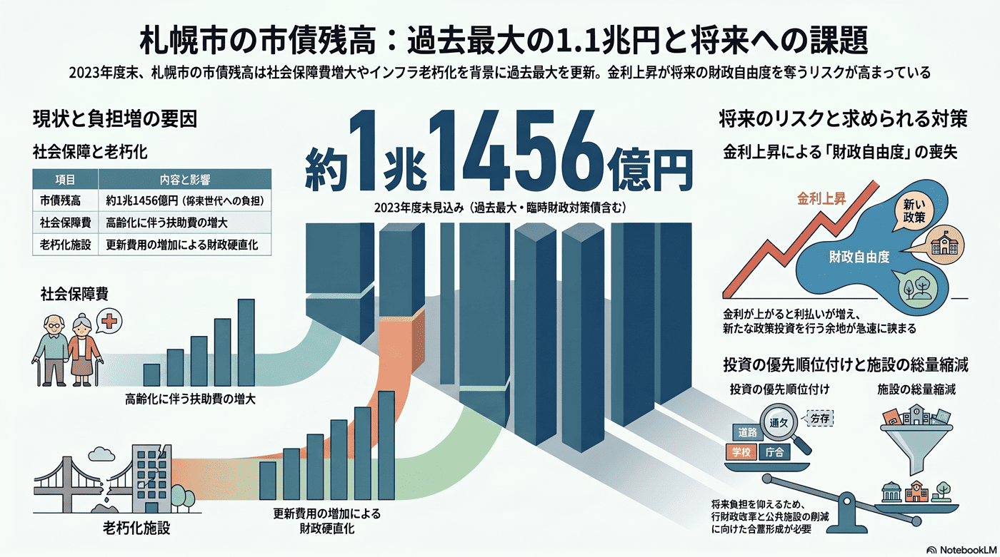

財政・行政
10年以内
市債残高の拡大
市の借金にあたる市債残高が過去最大規模に積み上がっている。

背景
借入の多くは将来世代の負担となる。低金利下で積み上がった残高は、金利上昇や歳入減と重なると財政の自由度を急速に奪い、政策的な投資の余地を狭める。
主要データ
| 市債残高（2023年度末見込み） | 約1兆1456億円（臨財債含む・過去最大） |
|---|
事実
- 2023年度末見込みの市債残高は、臨時財政対策債を含め過去最大の約1兆1456億円となった。
- 今後は社会保障費の増加や老朽化施設の更新費の増加が見込まれている。
解釈
借入の多くは将来世代の負担となる。低金利が続いた局面で積み上がった残高は、金利上昇や歳入減と重なると財政の自由度を急速に奪う。
提案
- 投資の優先順位付けと行財政改革の継続。
- 公共施設の総量縮減による将来負担の抑制（住民サービスとの調整が必要）。
検討体制・メンバー
札幌市財政局が行財政改革を主導する。検討会には財政・公会計の専門家、各事業部局、市民代表（負担と受益の合意）、議会を交え、投資の優先順位と将来負担を透明に議論する場が必要。
AIノート
AIの貢献度は中。歳入・歳出の長期シミュレーション、金利・人口シナリオ別の財政予測、事業の費用対効果分析で優先順位付けを支える。最終判断は政治・市民合意だが、AIは選択肢の見える化に寄与する。